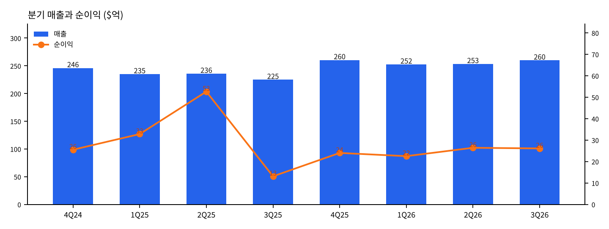
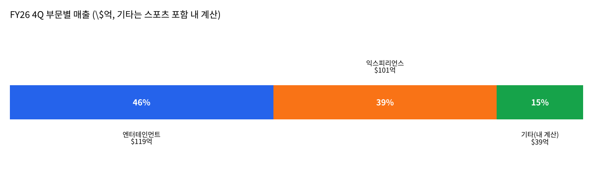
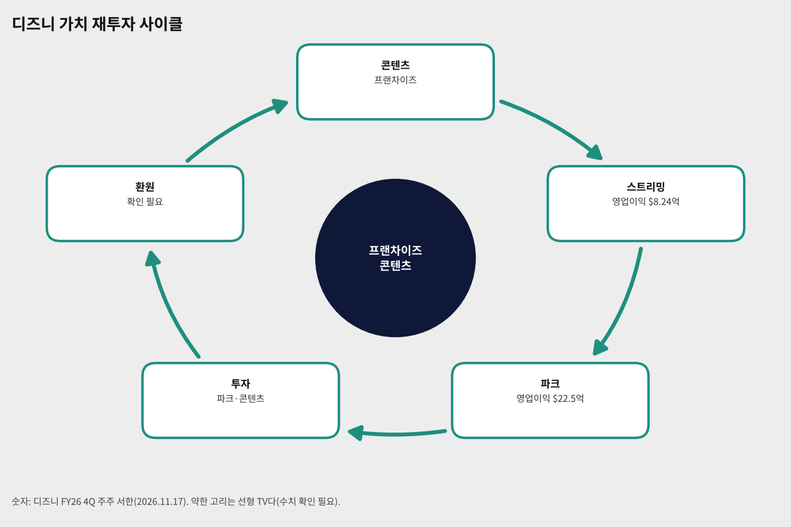

디즈니는 영화 스튜디오와 스트리밍, ESPN, 테마파크·크루즈를 운영한다. 이번 분기 스트리밍 이익이 두 배로 늘었고 파크 방문객도 늘었다.
| 항목 | 내용 |
|---|---|
| 종목 | Walt Disney (DIS) · NYSE · 커뮤니케이션(엔터테인먼트) · 캘리포니아 버뱅크 |
| 멀티플 | PER·PEG는 조정 EPS 기준(08 항목 표) |
| 최근 분기(FY26 4Q) | 매출 $259억, 조정 EPS $1.77 |
| 연간(FY26) | 매출 $1,023억, 조정 EPS $7.02 |
| 직원 수 | 약 234,000명(트레이딩뷰) |
| 직책 | 인물 | 역할·특징 |
|---|---|---|
| CEO | 조시 다마로(Josh D'Amaro) | '디즈니는 성장 기업'이라며 FY26 매출 +7%·조정 EPS +16%(53주차 제외)를 강조 |
| CFO | (확인 필요) | (이번 조사에서 확인하지 못함) |
경영 스타일: '스트리밍 수익화 + 파크 투자 + 구조 조정'. 스트리밍 마진 확대와 파크·크루즈 투자를 병행하고 인력을 줄인다.
디즈니+·훌루의 이용 시간과 요금으로 영업이익을 키운다.
Experiences 투자로 방문객과 단가를 높인다.
다음 실적발표는 세 가지 질문에 답하는 자리다.
1. 스트리밍 이익률이 계속 오르나?
2. 파크 방문객 증가(+4%)가 이어지나?
3. 선형 TV·영화 부진을 메우나?
한 줄 판정 규칙: 첫 질문(스트리밍 이익률)과 둘째 질문(파크)이 유지되면 약한 고리(선형 TV 감소)가 풀린다.
일정: FY27 1Q 실적 발표는 트레이딩뷰 기준 2027.02.10(확인 필요).
| 분기 | 매출 | 순이익 | EPS | 조정 EPS | 특이 사항 |
|---|---|---|---|---|---|
| 4Q24 | $246.0억 | $25.5억 | 1.40 | 1.76 | |
| 1Q25 | $235.0억 | $32.8억 | 1.81 | 1.45 | |
| 2Q25 | $235.8억 | $52.6억 | 2.92 | 1.61 | |
| 3Q25 | $224.9억 | $13.1억 | 0.73 | 1.11 | |
| 4Q25 | $260.4억 | $24.0억 | 1.34 | 1.63 | |
| 1Q26 | $252.5억 | $22.5억 | 1.27 | 1.57 | |
| 2Q26 | $253.4억 | $26.4억 | 1.51 | 2.06 | |
| 3Q26 | $259.8억 | $26.1억 | 1.51 | 1.77 | 조정 EPS $1.77(+59.5%), 53주차 포함. 조정 EPS 기준 FY26 +18% |
FY26 4Q(2026.10.03 종료) 매출 $259억(+16%), 순이익 $26.1억(트레이딩뷰), GAAP EPS $1.51(전년 $0.73), 조정 EPS $1.77(전년 $1.11)(회사 주주 서한 2026.11.17). 4Q는 53주차가 포함돼 전년 대비 부풀려졌다. 분기는 회계연도(9월 말) 기준 FQ이며 표의 분기 이름은 달력 기준 표기와 다를 수 있다. 매출·순이익·EPS(GAAP 희석)는 트레이딩뷰 스캐너, 조정 EPS는 트레이딩뷰 실적 페이지의 Reported 값이다. 분기 정렬은 오래된 분기→최신이다.

흐름 요약: 최근 분기 매출은 $259.8억로 전년 동기 $224.9억 대비 +15.5%, 순이익은 $26.1억(전년 $13.1억)다. 최근 4분기 GAAP EPS는 $5.63, 조정 EPS는 $7.03다.
| 부문 | 내용 | FY26 4Q 매출 | 비고 |
|---|---|---|---|
| 엔터테인먼트 | 스튜디오·스트리밍 | $119억 | 영업이익 $13억(+92%) |
| 익스피리언스 | 파크·크루즈 | $101억 | +15%, 영업이익 $22.5억 |
| 스포츠 | ESPN | (확인 필요) | 영업이익 $13억(+53%) |

스포츠 매출은 확인하지 못했다. 총매출 $259억 중 엔터테인먼트가 약 46%, 익스피리언스가 약 39%(내 계산)다.
디즈니는 '세계 최고의 이야기와 경험으로 사람들을 연결하는 엔터테인먼트 회사'가 되는 것을 목표로 한다.
| 축 | 내용 |
|---|---|
| 스트리밍 | 마진 확대 |
| 파크 | 방문객·단가 |
| 스포츠 | ESPN |

| 이동평균 | 값 | 종가 대비 | 위치 |
|---|---|---|---|
| 5일선 | $119.04 | +2.8% | 종가 위 |
| 20일선 | $115.53 | +5.9% | 종가 위 |
| 50일선 | $110.07 | +11.2% | 종가 위 |
| 100일선 | $105.76 | +15.7% | 종가 위 |
| 200일선 | $103.94 | +17.7% | 종가 위 |
52주 고가 $123.37(2026-11-18)·저가 $92.19(2026-03-27) 범위에서 종가 $122.36는 5일선, 20일선, 50일선, 100일선, 200일선을 웃돌고.
| 규칙 | 기준 | 현재 값 | 신호 |
|---|---|---|---|
| 장기 추세 필터 | 종가 vs 200일선 | $122.36 > $103.94 | 매수 |
| 중장기 교차 | 50일선 vs 200일선 | $110.07 > $103.94 | 매수 |
| 단기 교차 | 20일선 vs 50일선 | $115.53 > $110.07 | 매수 |
| 돈키언 채널 | 55일 고가 $123.37 / 저가 $101.15 | 중간값 $112.26 위 | 매수 |
| 1개월 모멘텀 | 21거래일 수익률 | +9.6% (기준 $111.67) | 매수 |
| 3개월 모멘텀 | 63거래일 수익률 | +14.0% (기준 $107.32) | 매수 |
| 6개월 모멘텀 | 126거래일 수익률 | +17.6% (기준 $104.08) | 매수 |
| 12개월 모멘텀 | 252거래일 수익률 | +15.8% (기준 $105.69) | 매수 |
| 종합 (8개 평균) | +1.00 | 강한 매수 |
해석: 매수 신호 8개(장기 추세 필터, 중장기 교차, 단기 교차, 돈키언 채널, 1개월 모멘텀, 3개월 모멘텀, 6개월 모멘텀, 12개월 모멘텀), 매도 신호 0개(없음). CTA 점수 +1.00(강한 매수). 14일 ATR $3.29 (2.7%), 52주 고가 $123.37 · 저가 $92.19.
| 가격 | 기준 | 무엇이 바뀌나 |
|---|---|---|
| $123.37 | 55일 고가 | 돌파 시 채널 상단 갱신 |
| $112.26 | 돈키언 중간값 | 55일 채널 중간값 위/아래로 신호가 바뀜 |
| $111.67 | 1개월 모멘텀 기준가 | 종가가 이 가격 위면 1개월 신호 매수 |
| $107.32 | 3개월 모멘텀 기준가 | 종가가 이 가격 위면 3개월 신호 매수 |
| $105.69 | 12개월 모멘텀 기준가 | 종가가 이 가격 위면 12개월 신호 매수 |
| $104.08 | 6개월 모멘텀 기준가 | 종가가 이 가격 위면 6개월 신호 매수 |
| $103.94 | 200일선 | 종가가 이 선 위/아래인지로 장기 추세 신호가 바뀜 |
| $101.15 | 55일 저가 | 이탈 시 채널 하단 갱신 |
가격 수준은 신호가 바뀌는 기준선일 뿐 진입·청산 가격 제안이 아니다. 20일/50일 교차는 이동평균 자체가 움직여 단일 가격으로 표시하지 않았다. 일봉·주봉은 종가 기준 직접 계산(고저 데이터 미사용)이다.
| 악재 요인 | 내용 | 강도 |
|---|---|---|
| 53주차 착시 | 4Q 증가율 부풀림 | 중간 |
| 선형 TV 감소 | 시청 감소·광고 감소 | 중간 |
| GAAP 감소 | FY26 GAAP EPS -18% | 중간 |
| 인력 감축 | 추가 감축 보도 | 참고 |
| 티커 | 회사 | PER(TTM) | PEG | P/S | EPS 성장(YoY) |
|---|---|---|---|---|---|
| DIS | 월트 디즈니 | 17.4배 | 0.94 | 2.06배 | +19% |
| NFLX | 넷플릭스 | 17.3배 | 0.39 | 5.01배 | +45% |
| CMCSA | 컴캐스트 | 8.0배 | – | 0.73배 | -48% |
비교 결론: 디즈니 PER은 넷플릭스보다 높고 컴캐스트보다 높다.
디즈니는 FCF 약 $106억(TTM)으로 부채 $479억을 감당한다.
| 지표 | 값 | 출처 | 해석 |
|---|---|---|---|
| 현금·단기투자 | $67억 | 트레이딩뷰 스캐너(최근 분기) | |
| 총부채 | $479억 | 트레이딩뷰 스캐너(최근 분기) | |
| 순부채(부채−현금) | $412억 | 내 계산 | 현금 대비 부채 부담 |
| 잉여현금흐름(TTM) | $106억 | 트레이딩뷰 스캐너 | |
| TTM 매출 | $1,026억 | 트레이딩뷰 스캐너 |
| 기준 | 매출 | P/S | 비고 |
|---|---|---|---|
| 내 계산(종가 ÷ 최근 4분기 매출 합계) | $1,026.1억 | 2.06배 | 시총은 정렬용 데이터에서만 사용 |
| 동종(트레이딩뷰) | – | NFLX 5.01배 · CMCSA 0.73배 | 11.19 |
해석: P/S 1.97배는 넷플릭스(5.01배)보다 낮다.
EBITDA는 영업활동의 현금 창출력을 보는 지표이고, PEG는 PER을 EPS 성장률로 나눈 값이다. EBITDA·FCF는 트레이딩뷰 TTM 값이다.
| 지표 | 값 | 산출 |
|---|---|---|
| EBITDA(TTM) | $224억 | 트레이딩뷰 스캐너 |
| EBITDA 마진 | 21.8% | EBITDA ÷ TTM 매출(내 계산) |
| FCF 마진 | 10.3% | FCF ÷ TTM 매출(내 계산) |
| PER(GAAP TTM) | 21.7배 | $122.36 ÷ $5.63 |
| PER(조정 TTM) | 17.4배 | $122.36 ÷ $7.03 |
| 방식 | PER | EPS 성장률 | PEG | 판정 |
|---|---|---|---|---|
| 조정 EPS (TTM $7.03) | 17.4배 | +19% ($5.93 → $7.03) | 0.94 | 투자 적격 |
| GAAP EPS (TTM $5.63) | 21.7배 | -18% ($6.86 → $5.63) | 산출 불가 | 참고 |
판정: 조정 EPS 기준 PEG 0.94 → 1.0 이하(투자 적격) PEG 기준은 1.0 이하 투자 적격, 0.5 이하 적극 매수다. EPS 성장률은 최근 4분기 EPS 합계를 직전 4분기 합계와 비교한 값(내 계산)이고, 일회성 항목이 있으면 조정 EPS 행을 함께 본다.

디즈니의 사이클은 콘텐츠 → 스트리밍·파크 이용 → 현금 → 콘텐츠·파크 투자 → 환원이다.
| 고리 | 현재 숫자 | 고리 강도 | 약해지는 신호 |
|---|---|---|---|
| ① 콘텐츠 | 블록버스터 프랜차이즈 | 강함 | 흥행 변동 |
| ② 스트리밍 | 영업이익 $8.24억 | 강함 | 경쟁 |
| ③ 파크 | 영업이익 $22.5억(+20%) | 강함 | 경기 |
| ④ 투자 | 파크·콘텐츠 투자 | 진행 중 | 자본 지출 |
| ⑤ 환원 | (확인 필요) | 확인 필요 | 투자 우선 |
사이클의 특징: 가장 약한 곳은 선형 TV이며 이번 조사에서 4Q 수치를 확인하지 못했다(확인 필요).